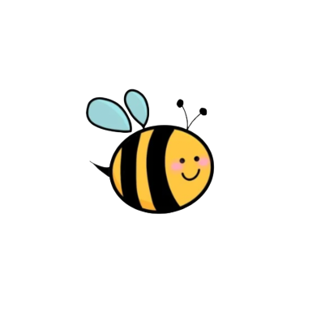

Buzzie Bee
a Website by 
Real support for youth and the people who care about them.
Helping people connect through creativity, communication, and community..
a Website by
Real support for youth and the people who care about them.
Helping people connect through creativity, communication, and community..

Lifelong learner and current CYCFS Master's student at the University of Victoria. Here are some organizations I've worked with in my career.
Those kids don't need another program that treats them like a problem. They need a friendly coach who actually sees them.
A cookbook written by a depressed youth counsellor for the days when even making toast feels impossible.
Easy recipes. Leftover plans. Grounding skills in the back. Made for real life.
Buy on Amazon